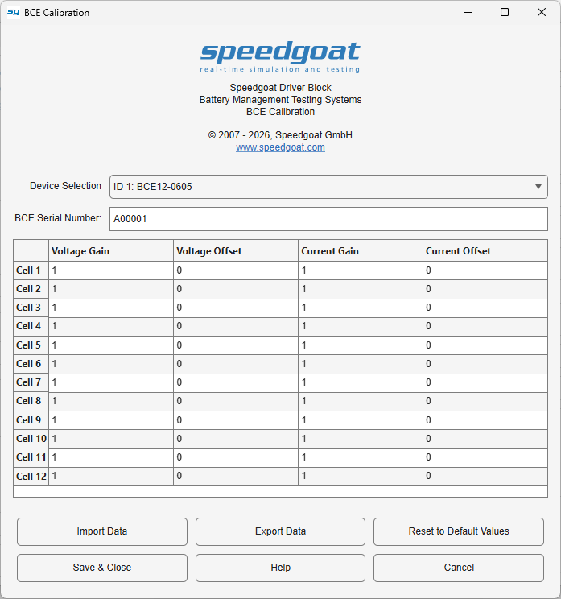

BCE Usage Notes
BCE Usage Notes — Usage information about the Battery Cell Emulator
Overview
![[Note]](images/note.png) | Note |
|---|---|
This documentation refers to the Speedgoat Battery Management Testing Systems (BMTS) that are supported with MATLAB R2022a and later. |
The BMTS driver block library allows users to configure and operate the Battery Cell Emulator (BCE), Fault Insertion Unit (FIU), and Temperature Sensor Emulator (TSE) with a Speedgoat real-time target machine. These usage notes cover additional topics about using the BMTS driver blocks with the BCE. For hardware-related topics, such as setup and safety instructions, please refer to the respective documents provided with each product.
AC Signal Modulation
With BCE SoC Firmware version 1.1.0.0 and later, and Speedgoat I/O Blockset version 9.10.0 and later, BCE AC Signal Modulation functionality is available. It allows users to load a table with predefined output values onto the BCE device and cyclically output this data at much higher frequencies than the base sample rate of the model. The predefined data can be applied either to the cell voltage or to the cell sink current.
When the AC Signal Modulation is started for multiple cells simultaneously using the AC_Signal_Start signal, microsecond synchronization between the respective cells' AC modulation signals is guaranteed.
Before starting the AC Signal Modulation, enable the cell and set the initial cell voltage and sink current to the desired values. For the selected AC signal output path (either voltage or sink current), the system adds the AC signal data to the cell's voltage or sink current setpoint (value applied through V or I input of the BMTS Write block).
While AC Signal Modulation is active, AC Signal Modulation takes full control of the selected cell output path. The non-selected output path behaves normally. Data acquisition remains unaffected. When you stop AC Signal Modulation, the cell returns to normal operation mode.
| Note |
|---|---|
The user is responsible for ensuring that the start value plus the amplitude of the AC signal data always remain within the legal output range of the device. |
Bus Signal Structure
The BMTS Read and BMTS Write blocks use Simulink bus signals as inputs/outputs. The structure of the bus signal depends on the configured device.
The Simulink Bus structures are allocated in the MATLAB base workspace once the parameters for the BMTS Setup, BMTS Read, and BMTS Write blocks have been defined. The bus for a BCE device always has the same structure, while the structure for each FIU or TSE device depends on the number of channels present in the device.
The bus structure to set the values of a BCE device is called BCE_Set and is as follows:
- BCE_Set
Cell_1, Cell_2, […], Cell_12
Enable: Enables or disables the cell. Data type: boolean
AC_Signal_Start: Start or stop the output of AC signal data. Data type: boolean
V: Set the cell voltage (adjustable power supply mode). Data type: single
I: Set the cell sink current (adjustable load mode). Data type: single
Note that all cell enable signals are forced off during the first 2 seconds of execution time. This is to ensure that the device configuration is completed before the cells are enabled.
The bus structure to get the values from a BCE device is called BCE_Get and is as follows:
- BCE_Get
Cell_1, Cell_2, […], Cell_12
Status: Provides status information about the cell. Data type: uint16
V: Measured cell voltage. Data type: single
I: Measured cell current. Data type: single
Charge: Coulomb charge count of the last sample step. Data type: uint64
The Status signal is of type uint16, where each bit indicates status or error information according to the following table.
| Bit | Description |
|---|---|
| 15 | Cell Coulomb Measurement Saturation Limit exceeded |
| 14 | Cell Source Current Limit exceeded |
| 13 | Cell Sink Current Limit exceeded |
| 12 | Cell Over-Voltage Limit exceeded |
| 11 | Cell Under-Voltage Limit exceeded |
| 10 | Cell Adjustable Power Supply or Adjustable Load DAC Error |
| 9 | Cell Thermal Alert |
| 8 | Cell Current Monitoring ADC Error |
| 7 | Cell Voltage Monitoring ADC Error |
| 6 | Cell Temperature Sensor Error |
| 5-4 | Reserved |
| 3 | Cell Busy |
| 2 | Cell Shutdown State |
| 1 | Cell Functional State |
| 0 | Cell Enabled |
Note that certain error states—such as cell undervoltage—may be set due to the voltage exceeding the configured limit value, even when a cell shutdown based on this limit is disabled. In this case, the cell continues to operate normally.
In Cell Shutdown State, Adjustable Power Supply and Adjustable Load are set to zero and DAC devices are powered down.
Assigning Bus Signals
There are various ways to handle bus signals in Simulink. One option is to use the BMTS Bus Pack block; this workflow is explained below. For other workflows, please refer to the MathWorks documentation.
Insert a BMTS Bus Pack block and connect it to the BMTS Write block. In the block mask of the BMTS Bus Pack block, select the correct BMTS device type from the drop-down menu. The corresponding Simulink Bus object is automatically allocated in the MATLAB base workspace.
By default, input ports are created for all signals inside the bus. To select only a subset of signals and reduce the number of input ports, use the tree view on the Signal Selection tab of the block mask.

Custom Calibration Values
With Speedgoat I/O Blockset 10.0.1 and later, the BCE Calibration functionality allows users to apply custom correction values for voltage and current measurements of each BCE cell. Even though each BCE is factory calibrated, different operating conditions or wear over time can create a need for gain and offset correction. The calibration settings are integrated into the BMTS Setup block and can be accessed from the BCE Device Configuration tab.
For every cell channel, individual Gain and Offset correction values can be defined separately for both voltage and current signals:
Voltage Gain/Voltage Offset: Adjust the measured cell voltage scaling and offset
Current Gain/Current Offset: Adjust the measured cell sink current scaling and offset
Default values are:
Gain = 1
Offset = 0
The calibration values can be:
edited manually in the table
imported from an existing calibration file using Import Data
exported for backup or reuse using Export Data
reset to default values using Reset to Default Values
Note that the calibration values are stored with the Simulink model and not transferred permanently to the BCE device. To move the calibration values from one model to another, use one of the following methods:
- copy and paste the BMTS Setup block
use the export and import functionality
Calibration values are only applied during model execution if the Enable checkbox is set in the BMTS Setup block (BCE Device Configuration tab).
Using the export button from the BCE Calibration mask exports the data for a single BCE unit. The serial number is stored together with the correction values for user reference, but has no functional impact on the calibration workflow.
If the calibration data is exported from the main BMTS Setup block mask (BCE Device Configuration tab), the data for all configured BCE devices is bundled into a single .mat file. This file can only be imported again (from the BCE Device Configuration tab) when the setup of the Network Topology tab matches the setup used during export.
